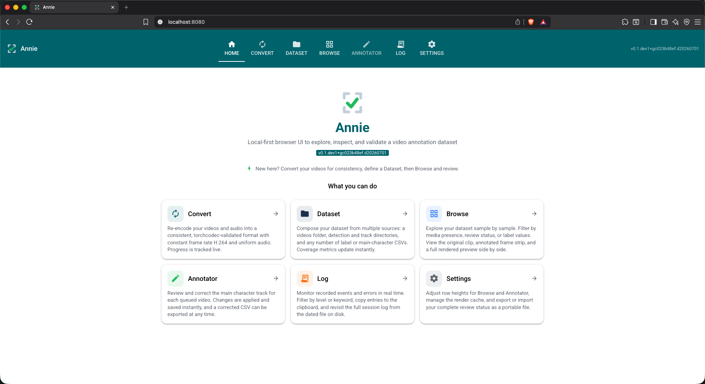
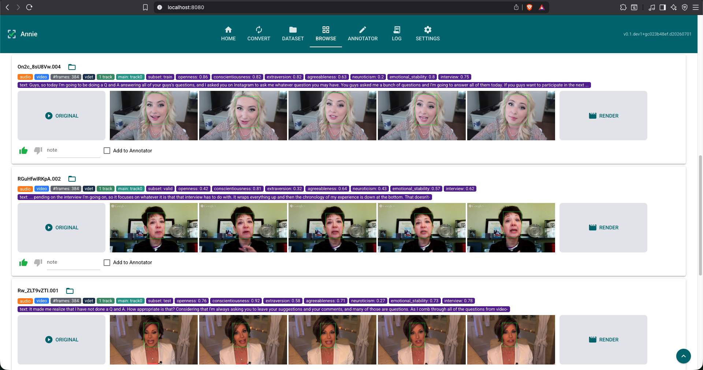

Local-first browser UI to explore, inspect, and validate a video annotation dataset

I kept running into the same problem while working with video datasets: the videos live in one folder, the annotations live in a pile of CSVs and detection files somewhere else, and there is no simple way to actually look at them together. Checking whether a face track is correct, or whether the labels line up with the right person, usually meant writing a throwaway script every single time.
Annie is my answer to that. It is a small, local-first web app that puts a video dataset and its frame-wise annotations side by side in the browser, so you can explore, sanity-check, and correct them in one place. Everything runs on a single machine — no server, no upload, no cloud. The datasets I had in mind are CMU-MOSEI and First Impressions V2 (face detections plus derived face tracks), but Annie is dataset-agnostic and built around extensible data sources.
The home tab (above) is a plain landing page that summarizes each tab and points you at a sensible starting workflow: convert your videos for consistency, define a dataset, then browse and review.
Browse is where most of the work happens. Each row is one sample: the original clip on the left, a strip of frames with the face detections drawn on them in the middle, and a full rendered preview on the right. The colored chips carry the annotations — subset, per-frame counts, tracks, and the label values for that sample. You can thumbs-up / thumbs-down, leave a note, and push anything questionable into the Annotator.

uv pip install "annie[all]"
annieThat launches the UI at http://127.0.0.1:8080. You will need FFmpeg (4–8) on your machine for
frame decode and rendering — ffprobe ships with it.
No local Python or FFmpeg required — the image on Docker Hub bundles everything.
docker pull fodorad/annie
docker compose upThen open http://localhost:8080.
git clone https://github.com/fodorad/Annie
cd Annie
make dev
make runEarly days — but usable today.
Annie is a young project I published as a personal tool, so expect rough edges and fast-moving internals. The explore, inspect, and validate loop already works end to end; richer authoring is on the way. If you try it and something breaks or feels off, issues and feedback are very welcome.
Stack: Python 3.12+, torchcodec for frame-accurate decode, FFmpeg for rendering. MIT licensed.